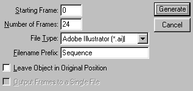
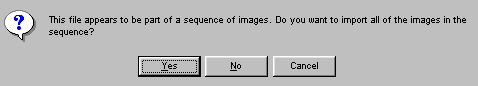
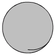
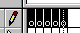
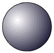
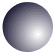
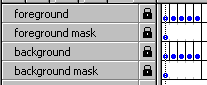
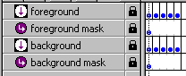

Creating a sphere with holes


 Downloadable FLA
Downloadable FLA
To make sphere with holes in it, make sure you have Adobe Dimensions. Version 1. 2. or 3. should all work.
Step 1. Click on the sphere tool. Click anywhere on stage, to create a 50pt sphere.
Step 2. Open Flash. Create a new Flash movie, with a size of app. 320 x 160.
Step 3. Draw a rectangle that takes up all the space. Now draw some circles inside the rectangle. These circles will become holes in time. Now fill outside the circles, so that you have a filled rectangle with holes in it.
Step 4. Press File > Export. Select .ai.
Step 5. Go back to Dimensions. Click CTRL + M while having the sphere selected.
Step 6. Click File > Place. Select the file you just exported from Flash.
Step 7. Now place this "texture" so that it fits the most of the square area.
Step 8. Press "Apply" in the upper right corner. Close the window when you've pressed Apply.
Step 9. Make sure you have the Surface Properties window. (Window > Surface Properties).
Step 10. Click "None" in the three first surface properties (Fill, Stroke, and Shade).

Step 11. Now click "View > Postscript".
Step 12. Click Operations > Generate Sequence.
Step 13. Rotate your sphere. Note, if you want to rotate it 360 degrees, rotate it 180, end sequence, and make a new sequence and rotate it 180 degrees again. Rotating it 360 degrees from the beginning won't do a thing.
Step 14. Click Operations > End Sequence.

Step 15. Import the first of the files in Flash. Flash will ask to import the entire sequence. Say Yes.

Phew. Long tutorial huh? Now, comes the tricky part.
Step 16. Ok, when imported into Flash, it just looks as a black circle. It isn't. Now we want to seperate foreground from background.
Step 17. Start from one end, with the first circle. Break it up four times, and you'll have the first gray wireframe. (There's two).

Step 18. Now, delete this wireframe. Now you should see the foreground of the sphere, in black, on a gray wireframe. (Hopefully with holes in it).
Step 19. Create a new layer, called Foreground, and place it ABOVE the layer with the sequence. Make a lot of empty keyframes.

Step 20. Select the foreground image. (The black part).
Step 21. Press CTRL + X to cut, go to the new layer, press CTRL + SHIFT + V to paste in place. Make sure you paste in the NEW layer.
Step 22. Break this image up, (the one you pasted in the new layer), until it's completely broken in pieces. (Break by pressing CTRL + B with the image selected).
Step 23. Go back to the bottom layer.
Step 24. Delete the gray wireframe. Break up the remaining background image.
Step 16. Repeat this process for ALL the images in the sequence.
Wow! Now we've seperated the foreground of the sphere from the background! Cool! But why?
Step 25. Insert two new layers. One below the foreground layer, and one below the background layer.
Step 26. Draw a circle, with the same size as the sphere, and place it so that it matches the sphere as an outline.
Step 27. Ok. Select the gradient tool, and select a radial gradient ranging from white to black. Fill the circle so that it looks like a ball.

Step 28. Delete the outline of the circle, by selecting and pressing del.
Step 29. Select the gradient, press CTRL + C to copy. Go to the other layer you just created. Press CTRL + V to paste in place.
Step 30. Now rotate the gradient you just place by 180 degrees. (Press CTRL + ALT + S while having selected the gradient.

Step 31. Your layers should look something like this:

Step 32. Click the lock on the foreground layer, and select "Mask". Do the same with the background layer.

Step 33. If all has gone well, you'll have your sphere now!
Voila!